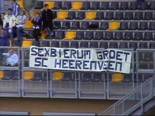

|
Roda JC - SC Heerenveen (1-0) 22 september 2002 |
Spiderman probeerde op slinkse wijze via west
binnen te dringen, maar we zijn toch echt blijer
met Kujovic!

Sexbierum was present, maar waar was
Heerenveen? Slechts 30 supporters kwamen
naar Kerkrade!
Zo spannend was het vandaag....
Een hele mooie vlag op west.
Kujovic keepte voortreffelijk!
In de 23e min. lanceert Soetaers deze pegel.
Vonk kan er niet bij en via de paal...
...gaat de bal er uiteindelijk in!
Na twee mindere duels speelde Sonkaya weer
op zijn vertrouwde bere-niveau.
Sonko daarentegen had een halve off-day en werd
dan ook vervangen door Nyggard.
Op het eind van de eerste helft barstte de hemel
open. Een forse regenbui joeg de omloop voller
dan ooit.

Spectaculaire actie van Vladan.

Luinge presteerde het weer eens om het publiek
te irriteren.
Heerenveen, inmiddels met stormram Denneboom,
perste er een slotoffensiefje uit.
Ja meneer Luinge, ja!
De geplaagde Heerenveenspelers bedanken hun
supporters.
Het was een beroerde wedstrijd, maar wederom
voegt Roda 3 punten aan het saldo toe.
Van Dessel in de Kick-Off drinkt er ene mee.
Anastasiou die hem vergezelde liet weten dat
Luinge een rode kaart verdiende !!!
Z16-supporters.
Koot toont zijn Gambiaanse (Sonko)-vlag in de
juiste richting: rood/wit/blauw/wit/groen.
Met deze parkeerwachters wordt het nog vaak
en voordelig parkeren :-)
Hongerig van alle bier en doelpunten sloten we
de driepunter af bij Roda-minded gastronoom
"Indians" te Kerkrade.